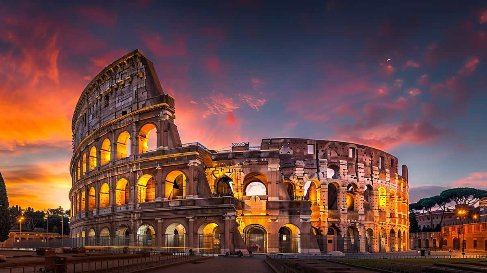

Навигация по странице
История | Достопримечательности | Советы
История Рима
Рим был основан, согласно традиционной легенде, в 753 году до нашей эры. В древности он стал центром Римской империи. Сегодня Рим является столицей Италии и одним из главных туристических центров Европы.
Главные достопримечательности
- Колизей
- Римский форум
- Пантеон
- Фонтан Треви
Что можно увидеть в центре города
-
Древние памятники
- Колизей
- Римский форум
-
Площади
- Пьяцца Навона
- Пьяцца Венеция
Колизей
Колизей — один из самых известных памятников Древнего Рима.

Нажмите на маленькое изображение, чтобы открыть большую фотографию.
Советы туристам
- Удобнее всего осматривать центр города пешком.
- На популярные достопримечательности лучше покупать билеты заранее.
- Летом стоит брать с собой воду.